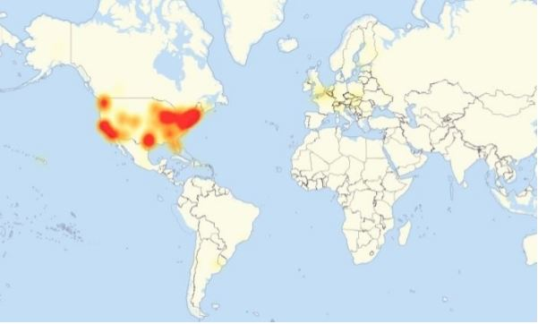
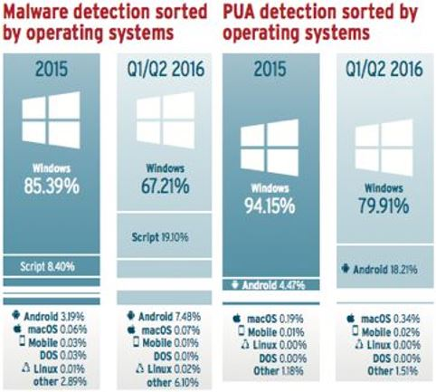

DVRs and other devices compromised with the Mirai malware are being the attack.
Malware that can build botnets out of IoT devices is at least partly responsible for a massive distributed denial-of-service attack that disrupted U.S. internet traffic on Friday, according to network security companies.
Since Friday morning, the assault has been disrupting access to popular websites by flooding a DNS service provider called Dyn with an overwhelming amount of internet traffic.
Some of that traffic has been observed coming from botnets created with the Mirai malware that is estimated to have infected over 500,000 devices, according to Level 3 Communications, a provider of internet backbone services.
About 10 percent of those Mirai infected devices are participating in Friday's DDOS attack, said Dale Drew, the company's chief security office in Periscope livestream. However, other botnets are also partaking in the attack, he added.
DDOS attacks and botnets are nothing new. However, the Mirai malware appears especially worrisome for its awesome power. An attack on the website of cybersecurity Brian Krebs last month managed to deliver 665Gbps of traffic to Kreb's site, making it one of the largest DDOS attacks ever recorded.
Unlike other botnets that rely on PCs, the Mirai malware targets internet-connected devices such as cameras and DVRs that have weak default passwords, making them easy to infect. Adding to the worry is that the developer behind Mirai has released the malware's source code to the hacker community.
Security firm Flashpoint said it has been able to confirm that some of the Mirai-infected machines involved in Friday's attack are DVRs.
The botnets participating in Friday's assault, however, are separate and distinct from those used to take down Kreb's website back In September, the security firm said.
Both Level 3 and Flashpoint have said copycat hackers have been trying to exploit the Mirai code since it was publicly released.
Friday's attack is still ongoing, according to Dyn. Its engineers are trying to mitigate "several attacks" aimed at its infrastructure. The company has also reportedly said that the DDOS attacks are coming from "tens of millions of IP addresses at the same time."
Degene achter de ddos-aanval van vrijdag op dns-provider Dyn maakte gebruik van het Mirai-botnet, bestaande uit vele verschillende iot-apparaten. Eenzelfde netwerk werd kort geleden ook gebruikt om de website van securityjournalist Brian Krebs plat te leggen.
Zowel securitybedrijf Flashpoint als Dale Drew, securityhoofd van internetprovider Level 3, zeggen bij de aanval van vrijdag kenmerken gezien te hebben die erop duiden dat het om een Mirai-botnet gaat. Flashpoint zegt dat er in het botnet onder andere digitale videorecorders zitten waarvan bekend is dat ze vatbaar zijn voor verslaving aan het Mirai-netwerk. Dale Drew spreekt er tegenover Network World van dat er zo'n 50.000 tot 100.000 door Mirai geïnfecteerde iot-apparaten betrokken waren bij de aanval. Dat zou 20 procent zijn van het gehele Mirai-netwerk, dat volgens hem 500.000 apparaten behelst. Daarnaast werden ook nog andere botnets ingezet, maar daar is geen verdere informatie over bekend.
De aanval zou voornamelijk bestaan hebben uit tcp syn floods, verzoeken van clients om een handshake uit te voeren met een server. Daarnaast zou ook een grote hoeveelheid subdomain attacks plaats hebben gevonden, waarbij bots niet alleen naar een door Dyn beheerd domein navigeren, maar ook nog een obscuur, niet-bestaand subdomein opvragen. De dns-servers moeten dan nagaan of het subdomein wel bestaat of niet, wat extra rekenkracht vergt ten opzichte van een normaal verzoek tot verbinden.
De eerste aanval, die ongeveer twee uur lang aanhield, was gericht op Dyn-datacentra in Chicago, Washington D.C. en New York. Vandaar ook dat gebruikers aan de oostkust van de VS hier hinder van ondervonden; dns-lookups gaan bij Dyn altijd via de dichtstbijzijnde server. De tweede aanval was er een die ongetwijfeld nauwkeurig gepland is, aangezien deze 20 Dyn-datacentra wereldwijd tegelijk trof, om zo een veel grotere groep gebruikers te treffen. Van die laatste aanval hadden gebruikers hier in West-Europa dus ook last.
Volgens Nick Kephart, storingsanalist bij netwerkbedrijf ThousandEyes, hebben verschillende internet backbone providers zoals Level 3 er op een gegeven moment voor gekozen om hun verbinding met Dyn tijdelijk af te breken om te voorkomen dat er ook buiten Dyn en de geassocieerde websites om congestie zou ontstaan. Hij vertelt dat ook aan Network World.
Het Mirai-botnet werd kort geleden nog ingezet om de website van securityonderzoeker Brian Krebs uit de lucht te halen. Kort daaropvolgend zette een persoon met de naam 'Anna-senpai' de broncode voor het botnet online voor iedereen om te gebruiken. De malware die erbij gebruikt wordt, richt zich op niet of zwak beveiligde iot-apparaten als ip-camera's en digitale videorecorders. Mirai is ook ingezet bij een ddos-aanval op de Franse internetprovider OVH. De ddos op de site van Krebs ging met 600Gbit/s en die op OVH met 1Tbit/s. Onduidelijk is hoeveel bandbreedte er kwam kijken bij de aanval op Dyn.
Op het moment lijkt het erop dat de aanvallen zijn opgehouden, zo schrijft ook Dyn zelf. Websites als die van Reddit, Soundcloud, Spotify, The New York Times, GitHub, Twitter en AirBnB zijn op het moment van schrijven vanuit Nederland ook gewoon bereikbaar.
The Google Pixel and Pixel XL are two of the most impressive Android handsets money can buy. Google’s first ever, iPhone-grade rivals, the Pixels are supposed to offer buyers the same premium features as Apple’s smartphone. Whether it’s design, hardware, or software experience, the Pixel is probably one of the best smartphones Android fans should consider. But is it at least as secure as the iPhone? In early November, Google’s director for Android security Adrian Ludwig said that the Pixels are “for sure” as secure ad the iPhone. However, white hat hackers managed to obtain full remote access to the phone in less than 30 seconds. That’s just a little scary.
White hat hackers are the right kind of hackers, the kind that will share software security inconsistencies with companies so they can fix it because the evil hackers can exploit them. But the fact they managed to crack the Pixel as fast is somewhat alarming for the bigger picture. What hackers did was to “gain full and complete remote access to the phone, including personal information like contacts, call logs, and messages.” Because the Pixels are Google’s Nexus replacements, they happen to run Google’s finest Android OS version, one that should be even more secure that older releases. And one that isn’t available on most Android handsets that do not have Nexus or Pixel in their names. But if Google’s best phones can be cracked as fast, what about other Android handsets that Google can’t patch as quickly?
According to Digital Trends, Google has already patched the exploit, so your Pixel should be back to “for sure” as secure as the iPhone. Yay for science! What’s not clear here is whether the exploit can be used on any Android device. In case it can be, then it’s a much bigger issue that Google can’t fix because it still doesn’t control Android updates. The hackers from security firm Qihoo 360 also broke Adobe’s Flash (under four seconds) and Apple’s Safari (less than 20 seconds). For these feats, they earned $120,000 a piece for the Google and Adobe hits and $80,000 for the attack on Apple. The hacks took place at the PwnFest hack event in Seoul, South Korea. It’ll definitely be interesting to see if they can also crack the iPhone 7 in a similar manner.
Het percentage malware en ongewenste software voor Windows is in de eerste helft van 2016 afgenomen, terwijl Android juist vaker het doelwit was. Malware voor macOS is verhoudingsgewijs afwezig en dreigingen op dit platform blijken vooral uit ongewenste software te bestaan, zoals toolbars.
Dat meldt het Duitse testlab AV-Test op basis van eigen onderzoek. AV-Test test beveiligingspakketten voor verschillende platformen met allerlei malware-exemplaren. Zo verwacht het testlab dit jaar 600 miljoen malware-exemplaren voor Windows in de database te hebben. Het besturingssysteem van Microsoft blijft het favoriete doelwit van aanvallers, maar er is een verschuiving zichtbaar.
De hoeveelheid malware die AV-Test voor Windows detecteerde daalde van 85% in 2015 naar 67% in de eerste helft van 2016. Android zag de hoeveelheid malware juist toenemen van 3% in 2015 naar 7,4% in de eerste helft van dit jaar. Inmiddels beschikt AV-Test over 13 miljoen malware-exemplaren voor Android. Malware voor macOS is nog altijd marginaal. Zo werden er over heel 2015 genomen in totaal 819 malware-exemplaren gedetecteerd.
Een andere dreiging waar computergebruikers op alle platformen mee te maken hebben zijn "potentieel ongewenste programma's", zoals toolbars, software die de zoekmachine en zoekresultaten aanpast of programma's die het surfgedrag monitoren en advertenties injecteren. Vorig jaar werden er 40 miljoen van dergelijke programma's aangetroffen. Het grootste deel (94%) was gericht op Windows. Ook Mac, Android en Linux kregen met de software te maken.
Werden er over heel 2015 genomen 819 malware-exemplaren voor macOS ontdekt, het aantal potentieel ongewenste programma's bedroeg ruim 76.000 exemplaren. Zelfs voor Linux werden er 412 programma's ontdekt. Android kreeg in 2015 met bijna 1,8 miljoen exemplaren te maken. Net zoals er bij malware een verschuiving plaatsvindt gebeurt dit ook bij potentieel ongewenste software. In de eerste helft van dit jaar nam het percentage voor Windows juist af (79,9%), terwijl Android van 4,5% naar 18,2% ging. Ook macOS zag het percentage potentieel ongewenste programma's groeien van 0,19% naar 0,34%. "In de eerste helft van dit jaar zien we een duidelijke trend; namelijk een aanval op de privacy van Androidgebruikers door de advertentie-industrie", aldus AV-Test. Volgens het testlab opereren advertentiebedrijven met potentieel ongewenste software in een bijna "wetteloos gebied". De meeste virusscanners en beveiligingspakketten kunnen de software wel detecteren en verwijderen, maar vaak is dit een politiek gevoelig onderwerp. Toch hebben verschillende partijen, zoals Avira, Malwarebytes en Microsoft, het afgelopen jaar maatregelen aangekondigd om de software aan te pakken.
